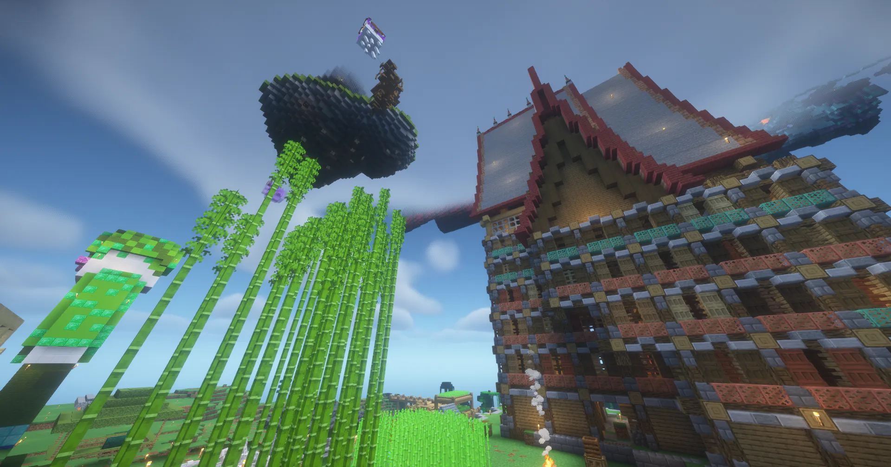

Commands & Mods
サーバーで使えるコマンド
コマンド名をクリックするとコピーできます。
- ハブ（ロビー）へ移動する
- 地面に座る
- 地面に横になる
- 地面を這う
- くるくる回る
- ブロックの変更履歴を確認する（CoreProtect インスペクトモードのON/OFF。※一般権限では co i のみ使用可能）
- 自分専用の共有チェストを開く（どのサーバーから開いても中身が同期）
ロック操作
- ブロックを private 保護（実行後に対象ブロックをクリック）
- 誰でも利用可能だが破壊不可なロック
- 中身を見せるだけ（アイテム取り出し不可）
- 誰でも投入可能、取り出しは自分のみ
- 取り出しのみ許可
- 保護を解除（実行後にクリックで適用）
- 保護情報（所有者・作成日時・アクセスリスト等）を確認
アクセス管理・権限
- プレイヤーにアクセス権を追加（実行後にクリックで適用）
- プレイヤーのアクセス権を削除
- ACLに詳細なアクセス権を追加
- ACLからアクセス権を削除
- 自分の全保護へのアクセスを許可（グローバルトラスト）
- グローバルトラストを解除
- 保護の所有権を別プレイヤーへ譲渡（実行後にクリックで適用）
グループ管理
- グループを新規作成
- グループにメンバーを追加
- グループからメンバーを削除
- グループのメンバー一覧を表示
- グループを削除
モード・その他
- 連続操作モードの ON / OFF 切替
- 自動保護を一時無効化
- 操作メッセージを非表示
- パスワード保護されたブロックへアクセス
- Boltのヘルプを表示
- 指定したコマンドの詳細ヘルプを表示
- 配信中であることを表示する
- 配信中表示を解除する
- 動画撮影中であることを表示する
- 動画撮影中表示を解除する
- 投票サイトの一覧を表示する
- 投票メニューをGUI画面で開く
- 投票ショップを開き、獲得ポイントをアイテムと交換する
- /vote shop の省略形
- 自分の合計投票数を確認する
- 次に投票できるまでの待ち時間を確認する
- 最後に投票した日時を確認する
- トップ投票者ランキングを表示する
- 連続投票記録を確認する
- 過去の自己ベスト投票記録を確認する
- 本日投票したプレイヤー一覧を確認する
- 投票関連コマンドのヘルプを表示する
Mods
MODについて
必須MOD以外で許可を希望するMODはDiscordの ご希望・質問・提案 チャンネルまでご連絡ください。許可なしMODの使用は自己責任です。
使用禁止MOD
- Freecam
- Fullbright